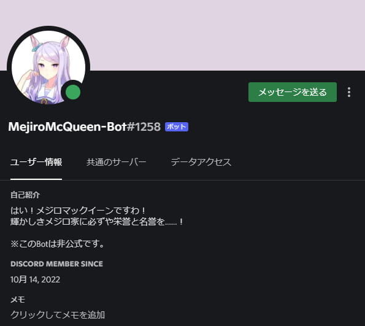

DiscordBot案内
MejiroMcQueen-Bot v.0.60

バージョン履歴
v.0.10 メッセージ送信、GIF送信、ヘルプ、製作者へのメンションを実装
v.0.20 動画の送信を実装
v.0.30 立ち絵送信、お誕生日のお祝い送信、特定のGIFを送信するとGIFを送信する機能を実装
v.0.40 メンションに反応、埋め込みメッセージに対応
v.0.50 格言を送信、他キャラクターへの言及
v.0.60 うまぴょい機能を実装、一心同体になれる機能を実装、阪神ネタを実装
コマンドヘルプ
パクパクですわ！→「パクパクですわ！」と送信します。
あっ！めじょまっきーんだっ！→ 正しい名前を送信します。
ついてく、ついてく・・・・・・。→ 今日も一緒に寝るか尋ねてきます。
@MejiroMcQueen-Bot → 反応を返してくれます。
mejiro.si → 「輝かしきメジロ家に必ずや栄誉と名誉を……！」と送信します。
mejiro.pr → プロフィールを送信します。
mejiro.pretz → ぷりっつをメンションします。
mejiro.meron → メロンパフェGIFを送信します。
mejiro.help → ヘルプを表示します。
mejiro.toresen.daiya → サトノダイヤモンドの素晴らしいトレセーン！の動画を送信します。
mejiro.signal → 始まりのsignalの動画ファイルを送信します。
mejiro.un.1~4 → 1から順に、制服、汎用勝負服、原案、勝負服(黒)を送信します。
mejiro.birthday → お誕生日ボイス動画を送信します。
mejiro.baseball → 魂のこもった応援をしてくれます。
mejiro.ws.1~8 → 格言を送信します。
mejiro.ws.334 → 阪神は関係ないですわ！。
mejiro.goldship → ゴールドシップについてお話してくれます。
mejiro.teio- → テイオーについてお話してくれます。
mejiro.umapyoi → うまぴょいしてくれます。
mejiro.of → 一心同体(テキスト版)を送信します。
mejiro.of.pic → 一心同体(画像版)を送信します。
mejiro.splatoon → Splatoonを勧めてきます。
https://media.discordapp.net/attachments/726411271100170290/943870261739028511/original.gif → よよよ～GIFを送信します。
homeに戻る